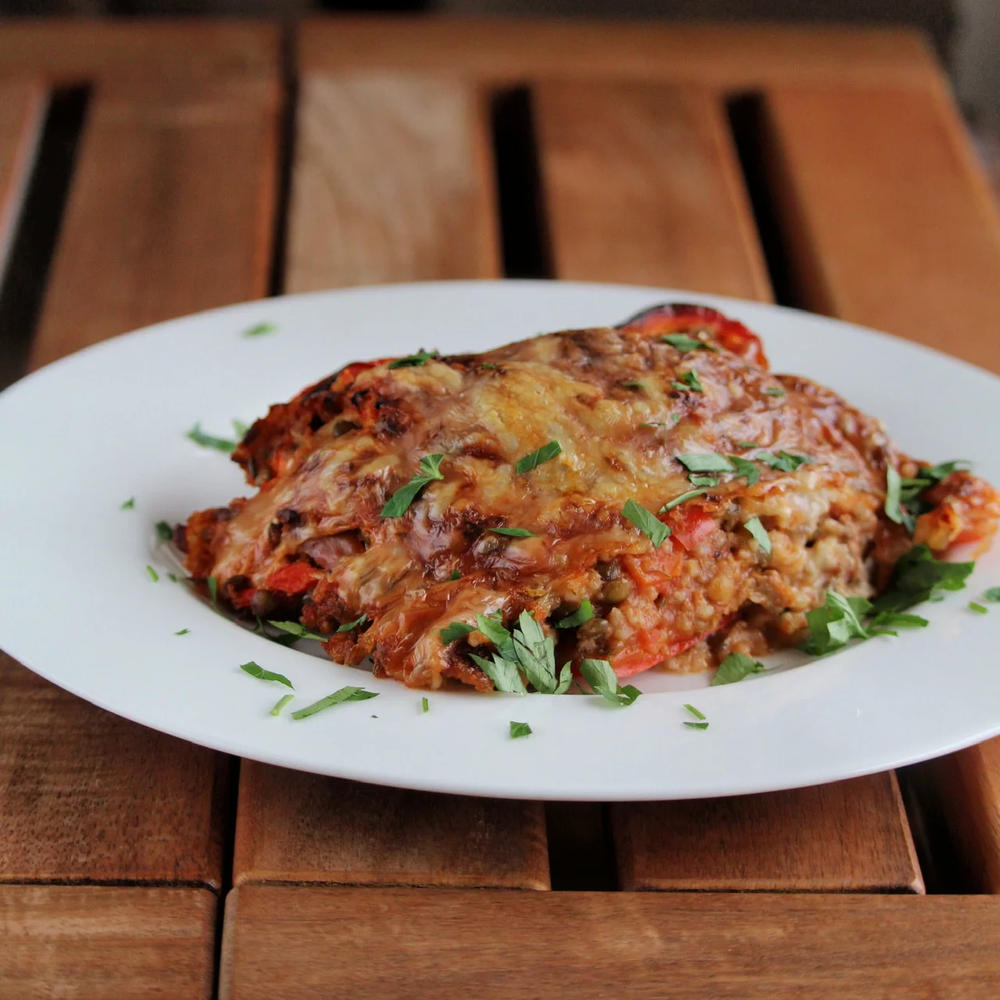

Basmati Rice and Turkey Stuffed Peppers

These are perfect for a weeknight, guilt-free meal with the family that even the kids
will love! Any leftover stuffing can be kept in the fridge for 3 days
- 1 ½ cups water
- ¾ cup brown basmati rice (such as Trader Joe's®)
- ½ onion, minced
- 2 cloves garlic, minced
- 2 tablespoons chopped fresh parsley
- 1 pound lean ground turkey
- 1 teaspoon kosher salt
- 1 teaspoon garlic powder
- ¼ cup tomato sauce
- 1 cup low-sodium chicken broth, divided
- 1 tablespoon olive oil
- 4 large red bell peppers, halved lengthwise and seeded
- ½ cup shredded Cheddar cheese
- Bring water and brown rice to a boil in a saucepan. Reduce heat to medium-low, cover,
and simmer until rice is tender and liquid has been absorbed, 45 to 50 minutes.
- Preheat the oven to 400 degrees F (200 degrees C).
-
Heat a large skillet over medium heat. Add onion, garlic, and parsley; cook for
2 minutes. Add ground turkey, salt, and garlic power. Cook and stir using a
wooden spoon until meat is no longer pink and slightly browned, about 5 minutes.
Add tomato sauce and 1/2 cup chicken broth. Simmer over low heat for 5 minutes.
Add cooked rice and stir stuffing well.
-
Fill each bell pepper half with stuffing and arrange neatly in a 9x13-inch baking
dish. Cover each pepper with a handful of shredded Cheddar cheese. Pour remaining
chicken broth into the bottom of the baking dish and cover tightly with aluminum foil.
-
Bake in the preheated oven for 40 minutes. Remove foil and bake until cheese is
browned, about 5 minutes more. Serve right away.